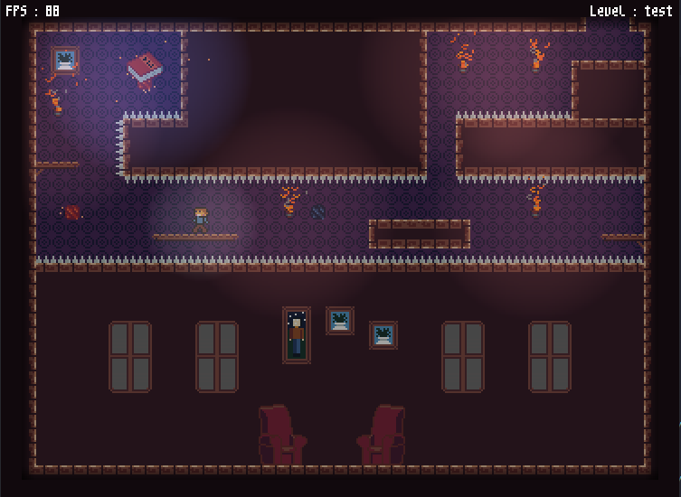

Vous entrez dans un manoir et votre sens du rangement prend le dessus, vous avez besoin de ranger ces livres !
Ramassez tous les livres, et trouvez les bibliothèques, mais attention, si vous mourez ils reprennent leurs places !
Pour passer de pièce en pièce et pour assouvir votre envie de ranger il vous faut recupérer tous les livres.

Durant votre visite du manoir vous serez exposé(e) a de sombres dangers.
Un jeu de parcours et de platformes compliqué et fait pour le speed run !
Evitez les pieges posés par le maitre des lieux et evitez la mort pour parvenir a votre but !
Utilisez des méthodes magiques pour vous sortir de ces périeuses situations !